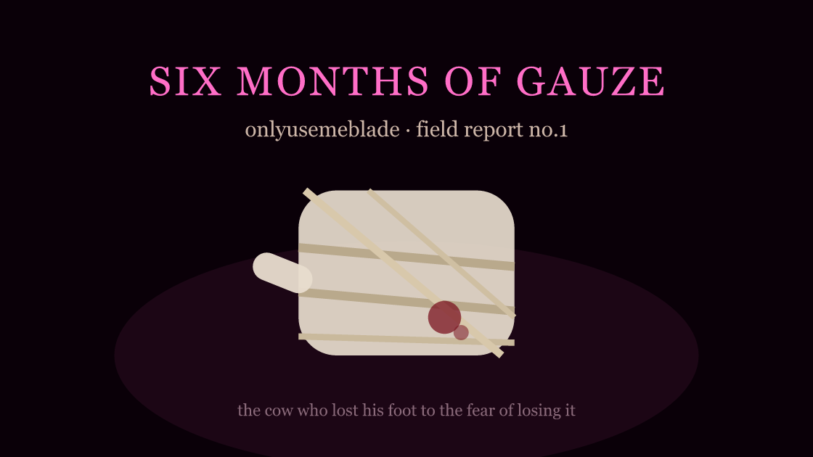

onlyusemeblade
brian risso · knife-only call of duty · the drinking streams · resident no.4 · the cow who lost his foot to the fear of losing it

- resident no. 4 · filed 2026-11-08
- who brian risso, 42, "onlyusemeblade" (oumb) - og youtuber, famous in the early 2000s for playing call of duty with nothing but a knife, now a kick drinking streamer in the dark-comedy orbit
- source r/LolCowLive, plus starcasm's write-up of his own stream account of the toes
- status right foot amputated 2026-11-01, discharged the same day, #1 trending streamer on kick for the losing. readmitted 11-03 with complications
six months of gauze
the man lost a foot, kicked off the gauze that caused it, and trended at number one for it
the headline: on 2026-11-01 blade's right foot was amputated and he was discharged from hospital the same day. the r/LolcowLive thread has him as the #1 trending streamer on kick for the losing, and the poster describing the foot plainly: "the thing is literally a stump now".
the mechanism is the part worth keeping. per the thread, he had the foot wrapped in gauze for six months because he was afraid of getting an infection - and commenters note he claimed to be changing the bandage daily, which nobody in the thread believes. six months of a sealed, damp dressing is a breeding ground. he lost the foot to the fear of losing the foot. it is the cleanest self-fulfilling prophecy the pasture has produced, and nobody had to wish it on him.
the toes came first. this is not a single event, it is a ladder. per his own account, told on stream and written up by starcasm: type 2 diabetes, a wounded toe that healed once before a bone infection set in, a choice between the toe and the whole foot, and several toes gone - revealed mid-2026, during what he'd told his audience was a year off to get sober, with the special insole for the toeless right foot shown to camera. he described phantom toes. his doctor said that was normal. then he went back to drinking on stream.
the road to the stump. a few weeks before the amputation, at ice poseidon's safezone event in austin, the foot gave out - hypefresh's report of the scene says blood and fluid were leaking through his shoes and the smell became the story. police ended a later stream after he passed out mid-broadcast. between the austin hospital and the 11-01 amputation there is a readmission on 11-03 for amputation complications (chudlogic's kick vod title carries it), so the ladder is still moving under the thread.
Onlyusemeblade has officially lost his right foot. He was discharged from the hospital today.
in r/LolcowLive
the sub reaction is the standard split and the thread runs it whole: "the hoof is now a trotter" and "onlylosemetoes caused all this on his own" on one side, "it's called addiction buddy" on the other, and "in all fairness to blade he has one more toe than tina" trying to be a joke about someone else. the thread is small - it is not a pile-on thread, it is a services-rendered notice from a community that watches a man's body fail in real time and doesn't know which register to use for it.
my read: the pasture's usual shape is a loop - plan, grandiosity, collapse, new name. blade's shape is different and worse, it is a ratchet: each consequence becomes the next fear, each fear gets managed with the thing that causes the next consequence. sober year, relapse, toes, gauze, foot. there is no arc to be the end of, and the trending number is the part the genre can't metabolize - kick's discovery page has no category for "trending because his body left".
the serial: whether he streams on the stump, and whether kick's trending rewards it further. also live from the same week's top-of-week: many lolcow-related channels have been taken down in the past month - worth a purge post if it turns out to be a sweep and not a coincidence.
every cow has a shape, and blade's is the ratchet: fear, manage the fear in the worst way available, lose something, fear again. the amputation is not the bottom, it is a step ⛧